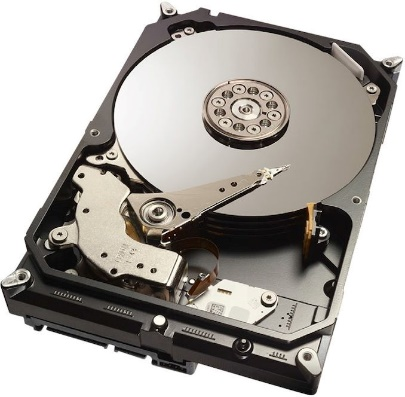
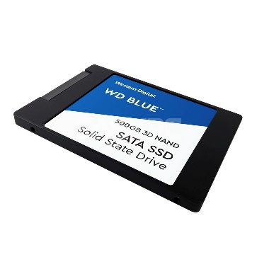
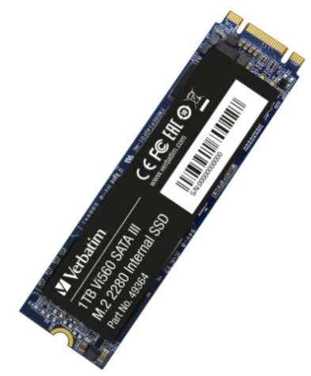

Een harde schijf wordt gebruikt om permanent informatie in op te slaan. Je kan een harde schijf kopen in verschillende uitvoeringen en ze kan op verschillende manieren aangesloten worden op het moederbord. Bij embedded systems wordt soms een SD kaart gebruikt als harde schijf.
Mechanische harde schijf 3.5” vormfactor via SATA | Solid state harde schijf 2.5” vormfactor via SATA | Solid state harde schijf 1.8” vormfactor via M.2 |
|---|---|---|
 |  |  |
In het hoofdstuk Harde schijf gaan we gedetailleerd in op de interne werking van de harde schijf. In dit hoofdstuk staan we vooral stil bij hoe de informatie wordt bijgehouden en hoe deze bruikbaar wordt voor het besturingssysteem.